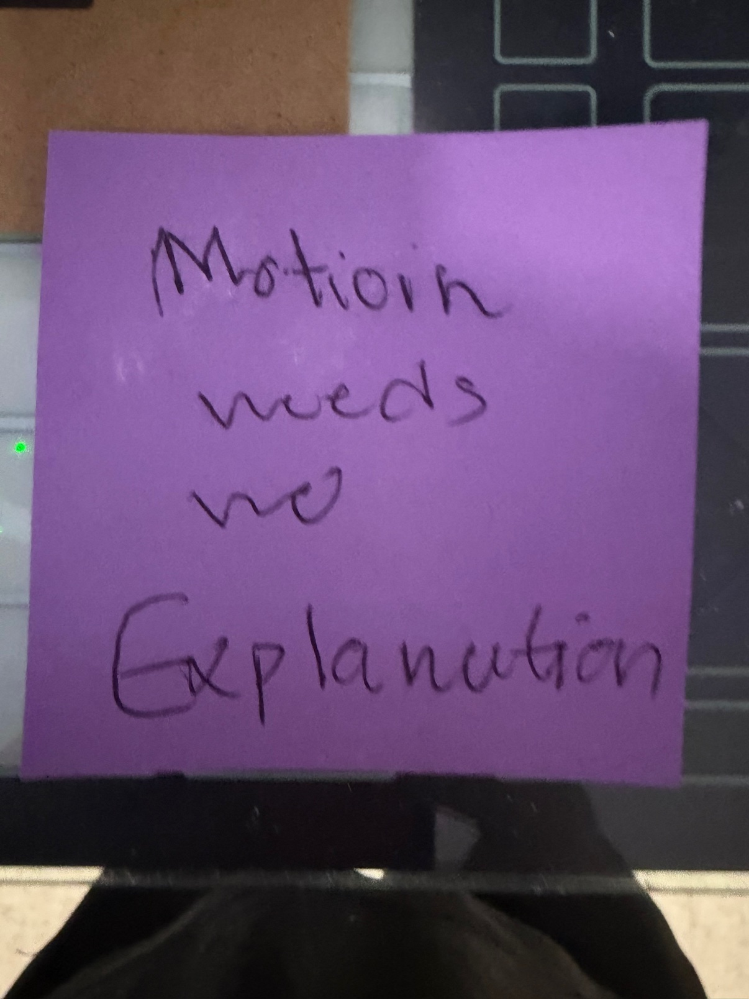

▶ Listen to the sequence
Two minutes, post by post — the whole run in your ears.
PoE 3.30 launches in
—days
—hrs
—min
—sec
Fri Nov 13 · 11:00 AM PST · Covens of Umbra
0 of 6 posted · 0 approved
Tap a post's status to move it: Planned → Captured → Approved → Posted. Nothing here posts anything — approval is still yours, per post, in the app where it goes live (@ne3ula_db).